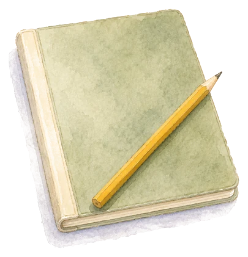
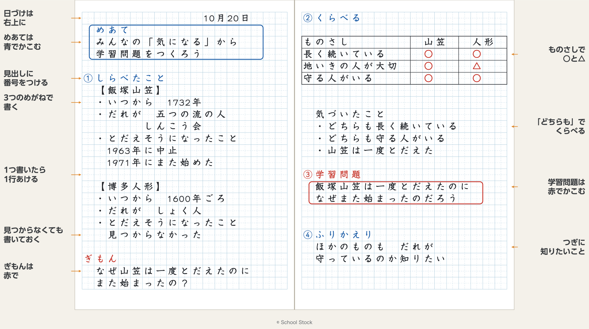

4年 社会 地域ちいきで受けつがれてきたもの
My notebook
わかったことや考えたことは、ノートに書きます。各かく時間に、ノートに書くことをまとめました。めあては青で、学習問題は赤でかこもう。

How to write

Notebook
福岡県ふくおかけんには、昔から受けつがれてきた、どのようなものがあるのだろう
みんなの「気になる」から学習問題をつくろう
予想を立てて、それをたしかめる調べ方を考えよう
飯塚山笠いいづかやまかさは、だれが、何のために始めたのだろう
飯塚山笠いいづかやまかさは、一度とだえたのに、なぜまた始まったのだろう
飯塚山笠いいづかやまかさに参加さんかする人は、どんな思いで参加さんかしているのだろう
祭りや行事は、だれに、どのように支ささえられているのだろう
ほかの祭りや行事は、何のために始まったのだろう
学習問題について、自分の考えをまとめよう
受けつがれてきた祭りや行事のために、わたしたちにできることは何だろう